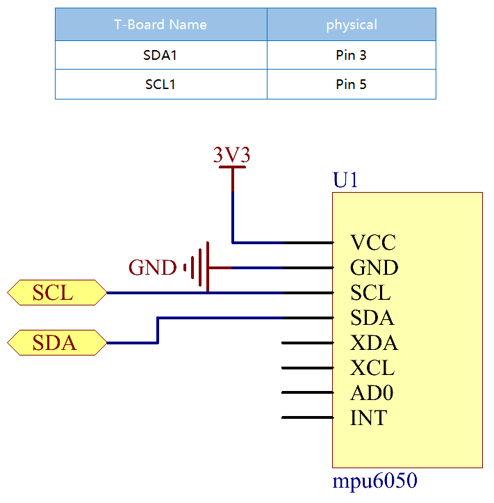

Note
Hello, welcome to the SunFounder Raspberry Pi & Arduino & ESP32 Enthusiasts Community on Facebook! Dive deeper into Raspberry Pi, Arduino, and ESP32 with fellow enthusiasts.
Why Join?
Expert Support: Solve post-sale issues and technical challenges with help from our community and team.
Learn & Share: Exchange tips and tutorials to enhance your skills.
Exclusive Previews: Get early access to new product announcements and sneak peeks.
Special Discounts: Enjoy exclusive discounts on our newest products.
Festive Promotions and Giveaways: Take part in giveaways and holiday promotions.
üëâ Ready to explore and create with us? Click [here] and join today!
2.2.6 MPU6050 Module
Introduction
The MPU-6050 is the world’s first and only 6-axis motion tracking devices (3-axis Gyroscope and 3-axis Accelerometer) designed for smartphones, tablets and wearable sensors that have these features, including the low power, low cost, and high performance requirements.
In this experiment, use I2C to obtain the values of the three-axis acceleration sensor and three-axis gyroscope for MPU6050 and display them on the screen.
Components

Schematic Diagram
MPU6050 communicates with the microcontroller through the I2C bus interface. The SDA1 and SCL1 need to be connected to the corresponding pin.
Experimental Procedures
Step 1: Build the circuit.

Step 2: Setup I2C (see Appendix I2C Configuration. If you have set I2C, skip this step.)
Step 2: Go to the folder of the code.
cd ~/davinci-kit-for-raspberry-pi/nodejs/
Step 3: Install dependencies.
sudo npm install mpu6050-gyro
Step 4: Run the code.
sudo node mpu6050_module.js
With the code run, the angle of deflection of the x-axis and y-axis and the acceleration, angular velocity on each axis read by MPU6050 will be printed on the screen after being calculating.
Code
var gyro = require("mpu6050-gyro");
var address = 0x68; //MPU6050 address
var bus = 1; //i2c bus used
var gyro = new gyro( bus,address );
async function update_telemetry() {
var gyro_xyz = gyro.get_gyro_xyz();
var accel_xyz = gyro.get_accel_xyz();
var gyro_data = {
gyro_xyz: gyro_xyz,
accel_xyz: accel_xyz,
rollpitch: gyro.get_roll_pitch( gyro_xyz, accel_xyz )
}
console.log(gyro_data);
setTimeout(update_telemetry, 500);
}
if ( gyro ) {
update_telemetry();
}
Code Explanation
var gyro = require("mpu6050-gyro");
var address = 0x68; //MPU6050 address
var bus = 1; //i2c bus used
var gyro = new gyro( bus,address );
Import the mpu6050-gyro module, determine the MPU6050 address and the bus creation object gyro,
It is convenient to call the encapsulated functions in the module.
Note
About this module, please refer to: https://www.npmjs.com/package/mpu6050-gyro
var gyro_xyz = gyro.get_gyro_xyz();
var accel_xyz = gyro.get_accel_xyz();
var gyro_data = {
gyro_xyz: gyro_xyz,
accel_xyz: accel_xyz,
rollpitch: gyro.get_roll_pitch( gyro_xyz, accel_xyz )
}
console.log(gyro_data);
setTimeout(update_telemetry, 500);
The module encapsulates three available functions:
gyro.get_gyro_xyz(): Returns JSON object with raw x,y,z datas from gyroscope.
gyro.get_accel_xyz(): Returns JSON object with raw x,y,z datas from accelerometer.
gyro.get_roll_pitch( gyro_xyz, accel_xyz ): Returns JSON object with roll and pitch in degrees.
Phenomenon Picture